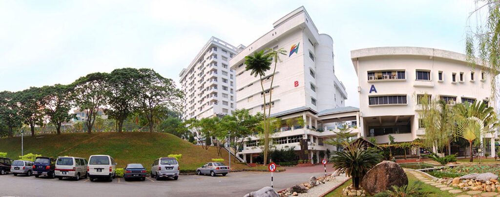

My Website
Week 6 Exercise 2
New Era University College
New Era University College (NEUC) was established in 1997 following the closure of Nanyang University in Singapore in 1980. It was the outcome of many years of efforts in addition to unwavering support from the Malaysian Chinese community.
Becoming a University College
On 30 December 2016 New Era was upgraded to University College status by the Ministry of Higher Education. This upgrading allows New Era University College to confer its own degrees and post-graduate degrees. Three faculties were thereupon formed out of existing departments and entrusted to develop and introduce new degree courses. At the same time diploma courses continued to be offered. These diploma courses while preparing graduates for a working career also serve as a pathway to degree courses in New Era and in partner overseas universities.
ABOUT ME

I'm currently studying Bachelor of Software Engineer in New Era University College.